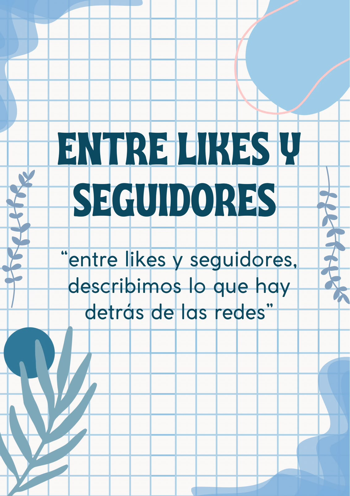
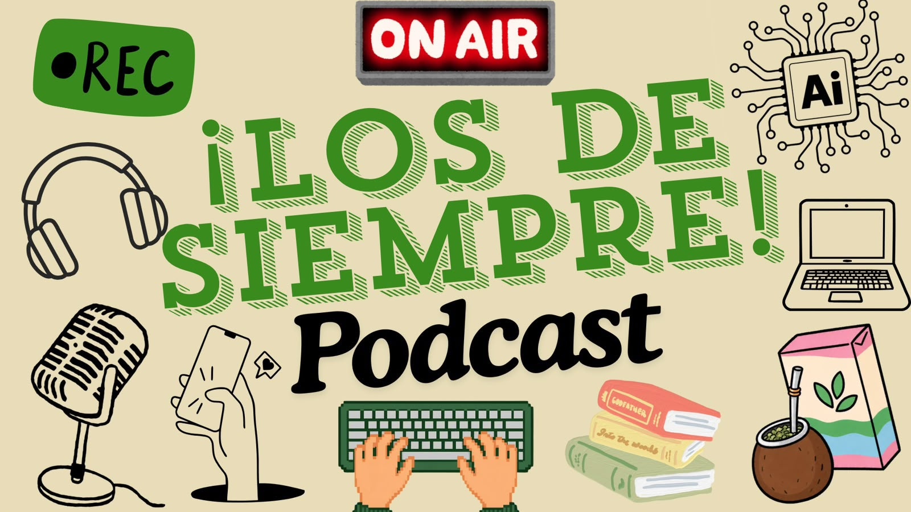

Grupo 1: Historias De Vida
Integrantes: Paula Acosta - Florencia Castillo - Claudia DeCésare - Rosana Santos
Un lugar libre para expresar emociones.

Espacio de producción radiofónica y podcast de nuestros estudiantes.
Bienvenida al Espacio:
Integrantes: Paula Acosta - Florencia Castillo - Claudia DeCésare - Rosana Santos
Un lugar libre para expresar emociones.

Integrantes: Tobías Amado - Victoria Méndez - Román Rosales - Joan Vargas
Entre likes y seguidores, describimos lo que hay detrás de las redes.
Integrantes: Ignacio Camargo - Magalí Nicolás - Guillermo Orellano - Ezequiel Perotti
Dialogamos sobre temas en general.
Integrantes: Agustín Altare - Thiago Góngora - Guillermo Orellano - Fiamma Seijo
Dialogamos sobre temas profundos que afectan a la sociedad toda, hoy es la Homofobia.

Integrantes: Emiliano Aguerrido - Lautaro Ferreyra - Lautaro Linares - Josué Lucero
Cómo afecta la tecnología en nuestras vidas y principalmente la Inteligencia Artificial.